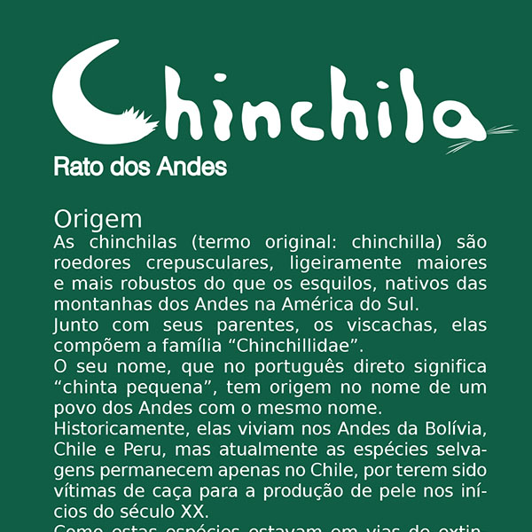
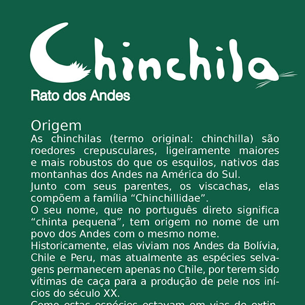
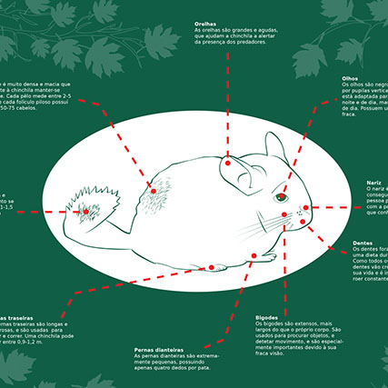
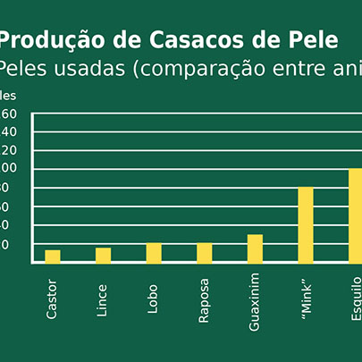
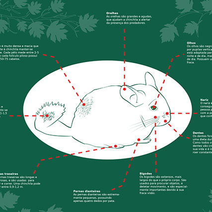
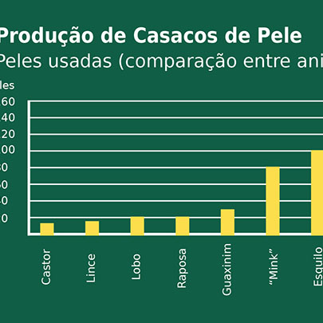

Infographics - Chinchilla
This project was developed in an academic context of Digital Drawing II, in Instituto Politécnico do Cávado e do Ave. The objective was the development of an infography, in which we could choose any subject we want, with the only limitation of using vectors in Adobe Illustrator. The chosen subject was the chinchilla, in which belongs to the group of crepuscular rodents. The infography was developed having in mind the characteristics da chinchilla:
- The origin and attributes;
- The locations from century XIX to present;
- The gestation stages;
- The types of chinchilla;
- The physical attributes;
- Production of fur coats;
- Comparision with other animals.
The main color is green, having in mind that this subject fits with the theme of Nature, having also some leaves elements. The vectorial figures and elements are highlighted with a white stroke, contrasting with the green background.
 



 


